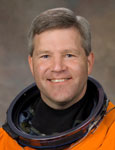

Lyndon B. Johnson Space Center
Houston, Texas 77058
|
National Aeronautics and Space Administration Lyndon B. Johnson Space Center Houston, Texas 77058 |
 |
Biographical Data |
||
Stephen N. Frick (CAPTAIN, USN, RET.)
NASA Astronaut
PERSONAL DATA: Hometown: Gibsonia, Pennsylvania. Married. He enjoys hiking , skiing, and camping.
EDUCATION: Graduated from Richland High School, Gibsonia, Pennsylvania in 1982. Received a bachelor of science degree in aerospace engineering from the US Naval Academy in 1986, and a master of science degree in aeronautical engineering from the U.S. Naval Postgraduate School in 1994.
ORGANIZATIONS: Society of Experimental Test Pilots, U.S. Naval Academy Alumni Association.
SPECIAL HONORS: Distinguished Flying Cross; Defense Meritorious Service Medal; 3 Navy Commendation Medals, one with Combat V; Air Medal with 2 Strike-Flight awards; 2 Southwest Asia Service Medals; NASA Outstanding Leadership Medal; NASA Spaceflight Medal
EXPERIENCE: Frick was commissioned upon graduation from the U.S. Naval Academy in May 1986. After being designated as a Naval Aviator in February 1988, he reported to Strike Fighter Squadron 106 at Naval Air Station Cecil Field, Florida, for transition to the F/A-18 Hornet. Upon completion of training, he reported to Strike Fighter Squadron 83 also at Cecil Field, and deployed to the Mediterranean Sea and Red Sea onboard the USS Saratoga (CV-60). During the 8-month deployment, Frick participated in Operation Desert Shield and Desert Storm, flying 26 combat missions from the Red Sea to targets in Iraq and Kuwait. He was also designated an airwing-qualified landing signals officer. After leaving Strike Fighter Squadron 83 in December 1991, he participated in a cooperative program with the Naval Postgraduate School in Monterey, California and the Naval Test Pilot School at Naval Air Station Patuxent River, Maryland resulting in a master's degree in aeronautical engineering and designation as a Naval Test Pilot. Upon graduation in June 1994, Frick was assigned as a project officer and test pilot to the Carrier Suitability Department of the Strike Aircraft Test Squadron also located at Patuxent River. While there he conducted shore-based and shipboard testing of the F/A-18 Hornet. Frick was assigned to Strike Fighter Squadron 125 in Lemoore, California, preparing for return to a deployed F/A-18 squadron when selected for the astronaut program in April 1996. Captain Frick retired from the U. S. Navy in September 2010.
He has logged more than 4,300 flight hours in 38 different aircraft, and has over 370 carrier landings.
NASA EXPERIENCE: Selected by NASA in April 1996, Frick reported to the Johnson Space Center in August 1996. After initial Space Shuttle crew training to qualify for flight assignment as a pilot, he has served in many capacities in the Astronaut Office including lead capsule communicator (CAPCOM) for the STS-114 return to flight mission, ascent and entry CAPCOM for multiple launches and landings, and Chief of the Safety Branch. Outside of the Astronaut Office, Frick has served as liaison to NASA HQ for return-to-flight activities after the Columbia accident, and the Orion Spacecraft Project Flight Crew Testing Lead. Currently he is serving as Chief of the Astronaut Office Exploration Branch. A veteran of two spaceflights, Captain Frick has logged over 565 hours in space. He served as pilot on STS-110 in 2002, and was the crew commander on STS-122 in 2008.
SPACE FLIGHT EXPERIENCE: STS-110 Atlantis (April 8-19, 2002) was the 13th Shuttle mission to visit the International Space Station. Mission milestones included delivery and installation of the S0 (S-Zero) Truss, first maneuvering of spacewalkers using the ISS robotic arm, and the first mission on which all spacewalks were based from the station’s Quest Airlock. The crew prepared the station for future spacewalks and spent a week in joint operations with the station’s Expedition-4 crew. The STS-110 mission lasted 10 days, 19 hours, and 42 minutes, and traveled 4.5 million statute miles in 171 Earth orbits.
STS-122 Atlantis (February 7-20, 2008) was the 24th Shuttle mission to visit the International Space Station. Mission highlight was the delivery and installation of the European Space Agency’s Columbus Laboratory. Three spacewalks by the Atlantis crew prepared the Columbus Laboratory for its scientific work, and replaced an expended nitrogen tank on the Station’s P-1 Truss. STS-122 was also a crew replacement mission, delivering Expedition-16 Flight Engineer, ESA Astronaut Léopold Eyharts and returning home with Expedition-16 Flight Engineer, NASA Astronaut Daniel Tani. The STS-122 mission was accomplished in 12 days, 18 hours, 22 minutes, and traveled 5.3 million statute miles in 203 Earth orbits.
OCTOBER 2010